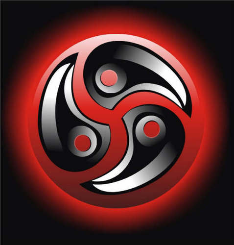

Bondage, Disciplina, Dominação, Submissão, Sadismo, Masoquismo.
O círculo que engloba, representa a unidade de tudo e a singularidade de uma comunidade que proteje seus membros.
Para os iniciados, o Emblema é cheio de significado.
-As três divisões representam as áreas do próprio BDSM: B&D; D&S e S&M.
-Depois, a comunidade: Seguro, São e Consensual.
-Terceiro, as três divisões da comunidade: Dominadores, Submissos e Switches.
É este terceiro simbolismo que dá significado aos orifícios existentes em cada setor.
Bondage Dominação Sadismo
Disciplina Submissão Masoquismo